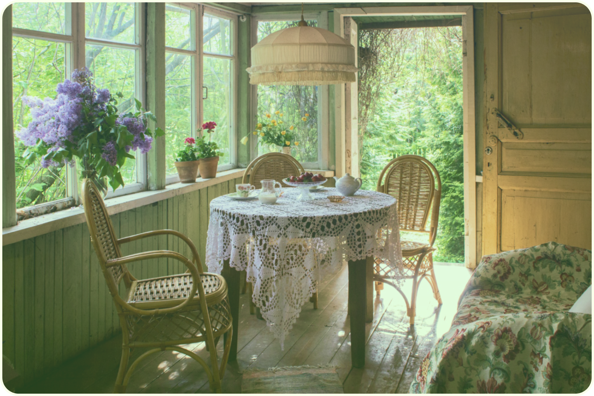
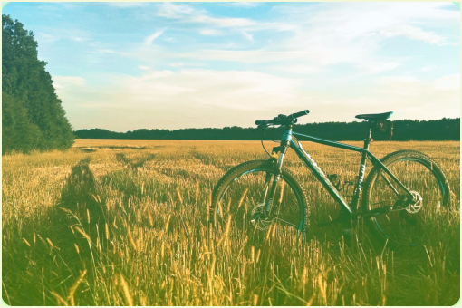

эстетика
участок
Рассказываем, как уютно и гармонично обустроит зону отдыха на даче

впечатление
релакс
сезоны
Эко-хобби вместо психолога:
зачем современному горожанину грядки

здоровье
участок
Все о продуктах, которые советуют нутрициологи для здоровья
релакс
сезоны
Открываем весенний чиллаут: подборка отдыха на майских праздниках

рецепты
Как в детстве! Делимся рецептом вкуснейшего вишневого варенья

сезоны
участок
Собрали для вас подборку неприхотливых и красивых цветов для дачи

участок
Рассказываем, как сделать дачу уютной и красивой без дорого ремонта

релакс
активный отдых
Дачный креатив: новая жизнь старого и забытого велосипеда

время с любимыми
эстетика